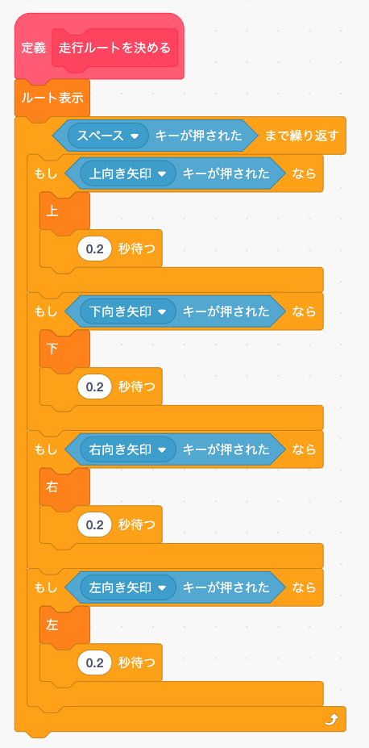
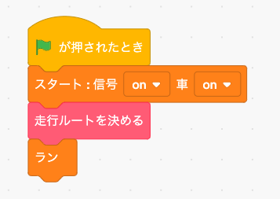

1
本物の自動運転車はいちいち人間が走行ルートを決めなくても目的地を言えばコンピュータが自動で走行ルートを決めてくれます。 でもいきなり自動でルートを決めるブログラムを作るのはむずかしいので、まずはキーボードを使ってマニュアルでルートを決めるプログラムをつくってみましょう。
まず「ブロック定義」メニューで「走行ルートを決める」というオリジナルブロックを作ります。
この「走行ルートを決める」ブロックの中身は次のようにします。
「緑の旗」を押した時に実行するメイン・プログラムは次のようにします。
2
では「緑の旗」ボタンを押してテストしてみましょう。 矢印ボタンでルートを選択して、スペースキーを押すと決定します。
正しく動いたら「ストップ」ボタンを押してタイトル画面に戻って下さい(シミュレータ画面は動作が重いのでプログラミングはタイトル画面でした方が良いです)。